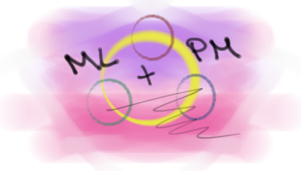

Welcome to the party
üç∏
I’ve lately volunteered for a small side project. The task was to build a curriculum for a technical topic. I was joined by a few people who shared similar interest in the technical topic. The team members were located in different countries around the world and we only recently got to know each other.
No time to waste
üèÉ
Since everybody was busy with their regular jobs we quickly wanted to get started and decided to gather learning content (YouTube, Web Pages, Learning Platforms, …) individually. We scheduled our second meeting to share the learning material that everybody had collected in the meantime. We quickly came up with a bunch of great resources. So we spent this second session to randomly present the resources to each other. At the end of the meeting I was puzzled. I had seen so many resources that where totally different than the ones I came up with. And I couldn’t imagine on how to put them together to a curriculum. Without any structure the great resources were kind of useless. Moreover, our newly formed team was also lacking of structure, which made it even harder to solve our task in a short time.
After the first two sessions it was obvious. We had to treat our task like a small project!
Pitfalls when you rush
üöß
At this early stage it was still easy to readjust and start over again. But before we checkout the changes we made, let’s take a look what went went wrong so-fare.
Who are we?
The dynamics of a team can be described in Tuckman (1965)’s four stages,
- forming, where group members try “to identify the boundaries of both interpersonal and task behaviors”,
- storming, where interpersonal conflicts arise, hence everyone searches for her/his role in the team,
- norming, where everyone settles for her/his role in the team and new group ”standards evolve”,
- performing, where finally ”the group energy is channeled into the task” and the group works efficiently.
Because everyone in our team was short in time we tried to skip the Storming and Norming stage and go straight to Performing. But Tuckman’s stages seem the work like physical laws, a group can’t circumvent certain stages. Even if formal hierarchies already exist, humans need to build trust first and find their role in the team. This is only possible through human interaction, which takes time. Though, the Storming and Norming phase can be very short if you take on a very standardized role to execute very standardized work. Which wasn’t the case in our small creative (non standardized) project.
Who is it for?
We all had a common sense of the technical topic we were supposed to cover. But the field of the technical topic is huge, with all levels of difficulties. At this point there also was only a vague definition of the audience of the curriculum.
How are we gonna make it?
We also didn’t talk in advance what steps we would take to reach our goal. Hence, we didn’t set a framework.
The overall situation could basically be summarized as: > A bunch of ambitious strangers from different cultural background were short in time and wanted to solve a vaguely defined task without a framework.
It’s time for a reset
⏮️
After we identified the obvious obstacles, we thought on how to readjust our way of working.
Obstacle 1: being short on time
The obvious adjustment would have been to take more time for the task at hand. Unfortunately this was not the preferred option in this case, because we volunteered for a side project that shouldn’t badly effect the regular work we had to do. But we could save some time by avoiding ineffective meetings, hence being well prepared when attending a meeting. ## Obstacle 2: working in a new team The time restriction was hard, so we sacrificed team building. That’s always a huge risk and relies on the hope that everyone acts professionally and has the same intrinsic motivation. Luckily, it worked out well. ## Obstacle 3: vague goals We had to define the goals more precisely. ## Obstacle 4: missing framework We had to define a structure on how to approach the task. Given the time limit and the interpersonal constraints this was the part with the highest chance to make a positive impact on the outcome of our project. And that’s what the rest of this blog will focus on.
Give it all some structure
üè¢
There are certainly many ways to give a project some structure. But since we were gathering material for a technical topic I found it amusing to tackle the project like a small Machine Learning (ML) project.
A ML project can, for instance, be defined in these steps:
- Define the overall goal (vision) üñºÔ∏è
- Re/define the objectives üñåÔ∏è
- Look at the data üîé
- Define metrics üéØ
- Define test strategy üìã
- Define architecture üèóÔ∏è
- Prepare data üë∑
- Execute ▶️
- Evaluate üìä
- Iterate over steps 2 to 10 üîÅ
Let’s briefly look what these steps could mean for a ML project. And what the outcomes of each step are. Say a cook we wants to build a classifier for flower pictures to identify herbs.
1. State your overall goal üñºÔ∏è
Write the foremost goal down in huge letters and pin it on the wall. A classifier to predict flowers. Every decision you make from now on must follow this goal. If you lose yourself in details during the process you can always refocus by looking at the wall reading the huge letters stating your overall goal. ## 2. Re/define the objectives üñåÔ∏è Figure out what is important and what not. Define the objectives precisely (e.g. through User Stories). ‚ÄùAs a cook I want the classifier to recognize all herbs in my garden, so that I don‚Äôt use the poisoning ones in my meals.‚Äù ## 3. Look at the data üîé Check the quality and structure of the data. Do exploratory data analysis (EDA). ‚ÄùSome of the pictures of the flowers and herbs are zoomed in, some are in panorama view and show many flowers. Classes are balanced.‚Äù ## 4. Define metrics üéØ Decide what your algorithm should optimize for. The cook will zoom in closely the take the picture. And since the training targets are well balanced, we choose Accuracy as metric. ## 5. Define test strategy üìã With the knowledge from EDA we decide on a test strategy and identify what is missing to implement the test strategy. ‚ÄúA stratified-KFold-split makes sense, but the labels still need some cleanup.‚Äù ## 6. Define architecture üèóÔ∏è We always want to start with a simple baseline in the first iteration. Later-on the architecture can get more complex, e.g. through ensembling. Let‚Äôs start with a Resnet18. ## 7. Prepare data üë∑ Clean and enrich the data. There is enough data. Remove the panorama shots. Clean the labels. Define the train/test/validation data sets. ## 8. Execute ‚ñ∂Ô∏è Build a model and train. ## 9. Evaluate üìä Evaluate the model against the metrics. Accuracy is only 80%. Let‚Äôs look at the most miss classified data and try to change the architecture in the next iteration.
I follow this procedure when I’m participating in Kaggle competition almost every time and I’m sure others follow similar approaches. Depending on how well prepared the data already is, some steps may be executed in slightly different order, e.g. architecture choice can also happen after data preparation. But for sure you want to have a clear picture from the very beginning for what to optimize for and how you evaluate it.
Transfer Learning to Project Management
üí≠
How can the structure of a ML-Project now be applied to my small side project - building a curriculum for a technical topic?
1. Define the overall goal üñºÔ∏è
We want to collect learning material so that people with different skill-sets and backgrounds can learn about the technical topic to use on in their jobs.
2. Re/define the objectives üñåÔ∏è
The audience consists of highly educated professionals, that need the technical knowledge for different reasons. Some need a deep technical understanding to use it as a Software Developer, some need a broad overview for their role as Project Manager and some just want to learn about the topic out of curiosity. Because of the heterogeneity of the audience I found it suitable to define different Personas. E.g. Andrea, Project Manager, doesn’t like to be fooled by the nerds during the meetings when they talk in their jargon. or Peter, Java evangelist, curious about that hot topic everybody is talking about. “Can’t be that hard, to just learn another language.”. With the personas in place we created categories where we could instantly assign the resources we already had collected. The human characteristics of the personas also lead to an imagination where the collected resources eventually fit to the the stories of the Personas we had in our minds.
In a later iteration we refined the objectives and added two other kind of categories. The one kind of category was concerning the knowledge depth (beginner, intermediate and advanced). The other kind of category distinguished between a business role and a tech role.
3. Look at the data üîé
Since we were limited on time we couldn’t do a deep analysis of every resource. If resources where known in advance by one of the team members we had to rely on her/his judgment. If resources were unknown we briefly scanned them or relied on public recommendations. It’s fare from optimal, but it must have been sufficient for a first iteration.
4. Define Metrics üéØ
We defined soft metrics implicitly.
- Do resources fit a Persona?
- Are the curriculum suitable for a certain category (e.g. beginner)?
- Are the resources accessible?
- Are the resources of high quality?
- Is a resource complementing other resources or can it replace other resources in the curriculum?
5. Define Test strategy üìã
We had chosen feedback as our test strategy. Feedback was gatherd from outsiders that were not involved in the creation process.
6. Define architecture üèóÔ∏è
The resources were collected in a wiki style manner that was easily accessible. The curriculum and its resources were structured by the categories defined in step 1.
7. Prepare data üë∑
Collect the resources. Scan the resources. Save references. Check accessibility.
8. Execute ▶️
Build a baseline model by choosing the relevant resources, sort them by category and write them down in the wiki. Make the page look nice and welcoming.
9. Evaluate üìä
Get feedback from stakeholders that are not part of the creation process.
10. Iterate üîÅ
After a few iterations we had a nice curriculum. Additionally we encourage the audience to extend the wiki page.
We made it!
üçæ
Given the restriction on time and team building our small project worked out pretty well.
And it was easy to transform our project management issue into a ML-task-like structure. Of course the analogy is a bit artificial. But keep in mind that common sense is the most important skill for project management. If you are a good ML practitioner, you can transform your knowledge into some project management skills. If you can do the one thing properly you can approach other issues properly as well.